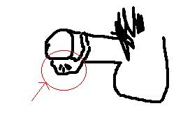

Circumcision Reversal
This menu page lists and links to scholarly articles about classical and modern surgical and non-surgical foreskin restoration. The articles are indexed in chronological order of publication.
History. Tushmet,3 Rubin,6 Hall,10 Schultheiss,17, Brandes18 and Hodges19 provide historical accounts. Foreskin restoration has been practiced at least since the Maccabean period in the 2nd century B.C.10,17,18 The Greek idea of an ideal prepuce was a prepuce with a long tapered shape. They practiced foreskin elongation by the use of traction on the prepuce to achieve the desired appearance.19
Foreskin restoration (epispasm) may have reached its peak of popularity during the first century A.D.10 The advantages have been rediscovered and it is now enjoying new popularity in the 21st century by the use of modern non-surgical tissue expansion methods of restoration.
Surgical restoration. Penn2, Greer7, and Goodwin9 describe various plastic surgical procedures for the reconstruction of the prepuce. There has been at least one report of complications resulting from surgical prepuce restoration. Surgical foreskin restoration has fallen into disfavor because of cost, complications, and the belief that non-surgical restoration provides an improved outcome at less expense.
Non-surgical restoration. Non-surgical restoration is accomplished by tissue expansion of the residual shaft skin to resemble a foreskin. Although tissue expansion was known in ancient times,10,17,18,19 knowledge of tissue expansion was lost until 1957 when Neuman published a report on the use of an inflatable inplanted device to enlarge an area of skin.1 The use of tissue expansion by medical doctors, however, did not become a standard procedure until after the publication of reports by Radovan.5 8 Tissue expansion in medical practice relies on the use of an implantable inflatable device to put tension an area of skin to cause it to enlarge by the formation of new cells.8 Tissue expansion now is an accepted surgical technique.12 Non-surgical foreskin restoration, however, does not rely on implantable devices. The necessary skin tension is obtained without cutting or incisions by external application of traction to the residual shaft skin of the penis.
Lay persons who were dissatisfied with their unwanted involuntary childhood circumcision pioneered the use of tissue expansion to accomplish foreskin restoration.12 The medical community has been slow to recognize the many advances in contemporary non-surgical prepuce restoration by skin expansion that have been pioneered by lay persons and little information has been published in the medical literature. Goodwin9 noted that a near normal appearance can be obtained by the application of traction over a long period of time. Bigelow,13 Pertot15 and Schultheiss17 discuss non-surgical restoration. An anonymous writer provides a report of his personal experience with non-surgical foreskin restoration.14 Non-surgical foreskin restoration is generally believed to be a safe procedure. For more information on current methods of non-surgical restoration, see the informal Restoration Page (Circumcision Information Pages). See also Non Surgical Foreskin Restoration (Link to www.infocirc.org)
|  |
| Fig.1: Results of dorsal slit procedure |
Repair of dorsal slit. A few males receive dorsal slit operations instead of circumcisions. A dorsal slit is a cut of the top of the foreskin. No tissue is removed from the penis. The foreskin then falls and collects below head in an unattractive ball. (There is another operation, the limited dorsal slit with transverse closure that is used to widen the narrow part of the foreskin to treat phimosis. The dorsal slit with transverse closure has good cosmesis. The two operations should not be confused.) The original form of the foreskin may be repaired by a plastic or urologic surgeon.6 The edges of the slit foreskin are gathered and sewn together to bring the foreskin back to its original natural intact appearance.6 This restores the various, protective, and sexual functions of the foreskin.
Psychological benefits. The medical community has been deeply suspicious of men who seek to have their circumcision mutilation reversed. Penn2 required psychological evaluation of his patient but found that the only psychological problem was one caused by the involuntary unwanted circumcision. Greer7 likewise was deeply suspicious and required both psychological and psychiatric evaluation of his patients. Greer reported, apparently to his surprise, that the repair of the circumcision injury by plastic reconstruction produced a psychological benefit in his patients. He reported that, "[e]very patient has reported the results of the operation to be pleasing and gratifying." They also reported increased glanular sensitivity. Goodwin9 was also concerned about psychological problems but reported that foreskin repair "delighted" at least one of his patients. Foreskin restoration has been proposed to treat the adverse psychological effects of circumcision.20

Library holdings
- Neumann CG. The expansion of an area of skin by the progressive distension of a subcutaneous balloon. Plastic Reconstructive Surgery 1957; 19:124-130, 1957.
- Penn J. Penile reform. Br J Plast Surg 1963:16:287-8.
- Tushmet L. Uncircumcision. Medical Times 1965;93(6):588-593.
- Schneider T. Circumcision and 'uncircumcision'. South African Medical Journal 1976;50(14):556-8.
- Radovan C. Adjacent flap development using an expandable silastic implant. Presented at the Annual Meeting of the American Society of Plastic and Reconstructive Surgeons, Boston, Mass. Sept. 30, 1976.
- Rubin J. Celsus' Decircumcision Operation. Urology 1980;16(1):121-124.
- Greer DM, Mohl PC, Sheley KA. Foreskin reconstruction: a preliminary report. Sexual Medicine Today. April 17, 1982.
- Radovan C. Tissue expansion in soft-tissue reconstruction. Plast Reconstr Surg 1984;74(4):482-92.
- Goodwin WE. Uncircumcision: A technique for plastic reconstruction of a prepuce after circumcision. J Urol 1990;144(5):1203-1205.
- Hall RG. Epispasm: circumcision in reverse. Bible Review 1992;August:52-7.
- Lynch MJ, Pryor JP. Uncircumcision: a one-stage procedure. Br J Urol 1993;72:257.
- Johnson TM, Lowe L, Brown MD, et al. Histology and physiology of tissue expansion. J Dermatol Surg Oncol 1993;19(12):1074-8.
- Bigelow J. Uncircumcising: undoing the effects of an ancient practice in a modern world. Mothering 1994; Summer: 56-60.
- Anonymous. The joy of uncircumcision. Br Med J 1994;309:676-7.
- Dr. Sandra Pertot. Sensitivity is the rising issue on circumcision. Australian Doctor, 25 November 1994.
- Bigelow J. (1995) The Joy of Uncircumcising! (2nd ed.) Hourglass Book Publ., Aptos, CA, USA. (out of print)
- Schultheiss D, et al. Uncircumcision: A Historical Review of Preputial Restoration. Plast Reconstr Surg 1998, 101:1990.
- Brandes SB, and McAnich JW. Surgical methods of restoring the prepuce: a critical review. BJU International 1999; 83, Suppl. 1:109-113.
- Hodges FM. The ideal prepuce in ancient Greece and Rome: Male genital aesthetics and their relation to lipodermos, circumcision, foreskin restoration, and the kynodesme. Bull Hist Med, 2001; 75(3): 375-405.
- Boyle GJ, Goldman R, Svoboda JS, Fernandez E. Male circumcision: pain, trauma and psychosexual sequelae. J Health Psychology 2002;7(3):329-43.
Hypospadias repair and foreskin preservation
Hypospadias is a condition in which the penile tube fuses incompletely during fetal development. This condition results in a malformed urethral orifice (meatus) with concomitant malformations of the glans, prepuce, and underside of the penis. The extent of the malformation varies, with the urethral opening positioned somewhere between the tip of the penis and the scrotum.
Traditional repair of hypospadias typically consumed the foreskin, resulting in a denuded, unnatural-looking circumcised penis. Today a number of improved techniques for hypospadias repair are now available, achieving a penis with a natural-looking reconstructed foreskin and improved cosmesis. Foreskin preserving techniques are described in reports by Kröpfl and colleagues,1, Gilpin and others,2 Hoebeke et al.3 A ten year follow-up by Gray and colleagues shows distal hypospadias repair with foreskin preservation to be very successful.6 Erdenetsetseg & Dewan reported excellent to good results in 86 percent of their patients.7
Because hypospadias is not a life-threatening condition, it is not urgent to order immediate surgery. The American Academy of Pediatrics says that there should be no genital surgery in the first six weeks of a child's life when bonding is occurring.4
The AAP has stated that the best times for hypospadias repair surgery are between six months and twelve months of age.4 However, it makes more sense to wait until the child is old enough to understand what is happening. More and more groups are now saying that any non-urgent genital surgery should be delayed until the child can decide for himself about the surgery.5
Because hypospadias is not an emergency condition, there is also plenty of time to seek out a surgeon who is familiar with modern repair techniques and who can achieve the best, most natural-looking result. The latest surgical procedures are able to provide a natural intact appearance in many cases.
A general discussion of hypospadias is outside the scope of the Circumcision Reference Library. Parents are urged to seek out complete information elsewhere.
Library holdings:
- Kröpfl D. Schardt M, Fey S. Modified meatal advancement and glanduloplasty with complete foreskin restoration . European Urology 1992;22:57-61.
- Gilpin D, Clements WDB, Boston VE. GRAP repair: single stage-reconstruction of hypospadias as an outpatient procedure. Br J Urol 1993;71:226-9
- Hoebeke PB, De Kuyper P, Van Laecke E. 'Batman Excision' of ventral skin in hypospadias repair, clue to aesthetic repair (point of technique). Eur Urol 2002;42(5):520-2.
- Section on Urology, American Academy of Pediatrics. Timing of Elective Surgery on the Genitalia of Male Children With Particular Reference to the Risks, Benefits, and Psychological Effects of Surgery and Anesthesia (RE9610) . Pediatrics 1996;97(4):590-4.
- The Rights of the Intersex Child. San Anselmo, CA: National Organization of Circumcision Information Resource Centers, 2001.
- Gray J, Boston VE. Glanular reconstruction and preputioplasty repair for distal hypospadias: a unique day-case method to avoid urethral stenting and preserve the prepuce. BJU Int 2003;91(3):268-270.
- Erdenetsetseg G, Dewan PA. Reconstruction of the hypospadiac hooded prepuce. J Urol 2003;169(5):1822-4.
- Leclair MD, Camby C, Battisti S, et al. Unstented tubularized incised plate urethroplasty combined with foreskin reconstruction for distal hypospadias. Eur Urol 2004;46(4):526-30.
Other sources of information.
- Hypospadias Association of America
- Hypospadias in men and boys
- Intersex Society of America— Hypospadias
- Hypospadias Support Group (U.K.)
- Hypospadias